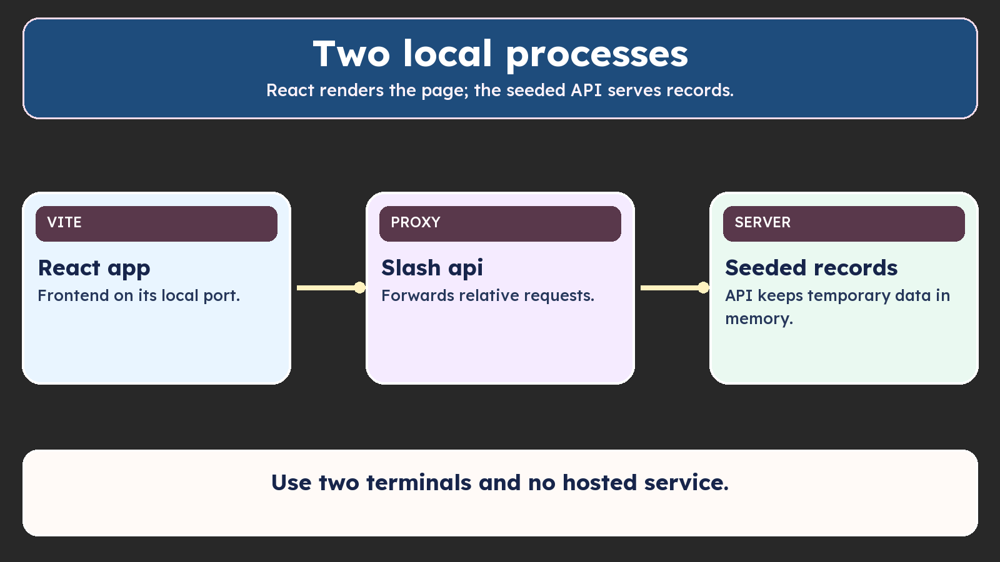

Use this lecture’s source checkpoint with the Script/Show map.

Use two terminals and no hosted service.
Start the supplied API and React app in separate terminals. Use GET /api/health to check for status 200 and {"status":"ok"}. Employee endpoints are explained when their features are built.
Optional API contract reference — the full map is reviewed at the end of the section.